| Thoughts | Activity |
|---|---|
| The daily ridership values between stations are extremely correlated. | EDA |
| Weekday and weekend ridership look very different. | EDA |
| One day in the summer of 2010 has an abnormally large number of riders. | EDA |
| Which stations had the lowest daily ridership values? | EDA |
| Dates should at least be encoded as day-of-the-week, and year. | Feature Engineering |
| Maybe PCA could be used on the correlated predictors to make it easier for the models to use them. | Feature Engineering |
| Hourly weather records should probably be summarized into daily measurements. | Feature Engineering |
| Let’s start with simple linear regression, K-nearest neighbors, and a boosted decision tree. | Model Fitting |
| How many neighbors should be used? | Model Tuning |
| Should we run a lot of boosting iterations or just a few? | Model Tuning |
| How many neighbors seemed to be optimal for these data? | Model Tuning |
| Which models have the lowest root mean squared errors? | Model Evaluation |
| Which days were poorly predicted? | EDA |
| Variable importance scores indicate that the weather information is not predictive. We’ll drop them from the next set of models. | Model Evaluation |
| It seems like we should focus on a lot of boosting iterations for that model. | Model Evaluation |
| We need to encode holiday features to improve predictions on (and around) those dates. | Feature Engineering |
| Let’s drop KNN from the model list. | Model Evaluation |
Metody Walidacji Modeli Statystycznych
Zagadnienia do przygotowania na egzamin ustny z Metod Walidacji Modeli Statystycznych
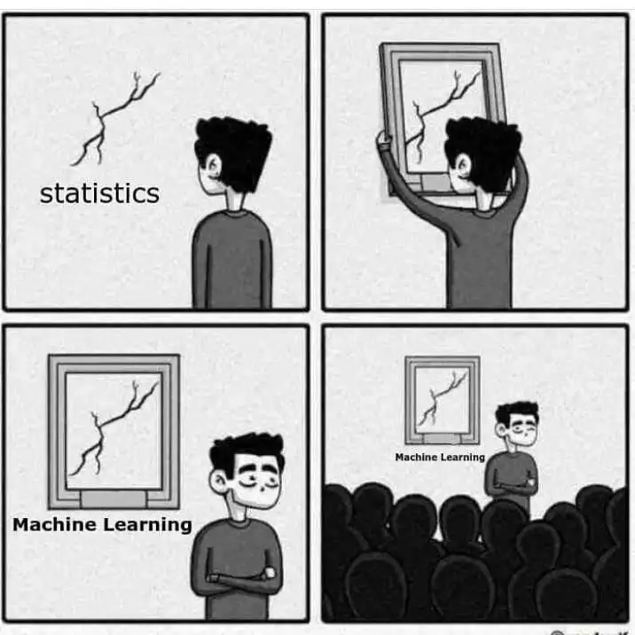
1. Opisz typy modeli statystycznych w podziale na przeznaczenie. Wymień po jednym przykładzie dla każdego typu.
- Modele opisowe
Celem modelu opisowego jest opis lub zilustrowanie pewnych cech danych. Analiza może nie mieć innego celu niż wizualne podkreślenie jakiegoś trendu lub artefaktu (lub defektu) w danych.
Przykład: Pomiary RNA na dużą skalę są możliwe od pewnego czasu przy użyciu mikromacierzy. Wczesne metody laboratoryjne umieszczały próbkę biologiczną na małym mikrochipie. Bardzo małe miejsca na chipie mogą mierzyć sygnał oparty na bogactwie specyficznej sekwencji RNA. Chip zawierałby tysiące (lub więcej) wyników, z których każdy byłby kwantyfikacją RNA związanego z procesem biologicznym. Jednakże na chipie mogłyby wystąpić problemy z jakością, które mogłyby prowadzić do słabych wyników. Na przykład, odcisk palca przypadkowo pozostawiony na części chipa mógłby spowodować niedokładne pomiary podczas skanowania.
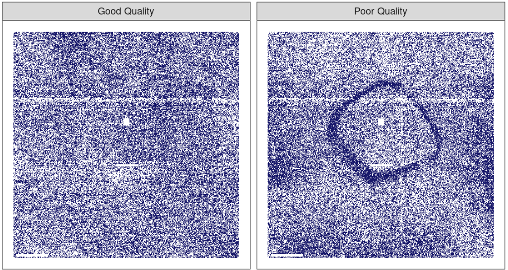
Wczesną metodą oceny takich zagadnień były modele na poziomie sondy, czyli PLM. Tworzono model statystyczny, który uwzględniał pewne różnice w danych, takie jak chip, sekwencja RNA, typ sekwencji i tak dalej. Jeśli w danych występowałyby inne, nieznane czynniki, to efekty te zostałyby uchwycone w resztach modelu. Gdy reszty zostały wykreślone według ich lokalizacji na chipie, dobrej jakości chip nie wykazywałby żadnych wzorców. W przypadku wystąpienia problemu, pewien rodzaj wzorca przestrzennego byłby dostrzegalny. Często typ wzorca sugerowałby problem (np. odcisk palca) oraz możliwe rozwiązanie (wytarcie chipa i ponowne skanowanie, powtórzenie próbki, itp.) Rysunek pokazuje zastosowanie tej metody dla dwóch mikromacierzy. Obrazy pokazują dwie różne wartości kolorystyczne; obszary, które są ciemniejsze to miejsca, gdzie intensywność sygnału była większa niż oczekuje model, podczas gdy jaśniejszy kolor pokazuje wartości niższe niż oczekiwane. Lewy panel pokazuje w miarę losowy wzór, podczas gdy prawy panel wykazuje niepożądany artefakt w środku chipa.
- Modele do wnioskowania
Przykład: celem badania klinicznego może być potwierdzenie, że nowa terapia pozwala wydłużyć życie w porównaniu z istniejącą terapią lub brakiem leczenia. Jeśli kliniczny punkt końcowy dotyczyłby przeżycia pacjenta, hipoteza zerowa mogłaby brzmieć, że nowa terapia ma równą lub niższą medianę czasu przeżycia, a hipoteza alternatywna, że nowa terapia ma wyższą medianę czasu przeżycia. Jeśli ta próba byłaby oceniana przy użyciu tradycyjnego testowania istotności hipotezy zerowej poprzez modelowanie, testowanie istotności dałoby wartość \(p\) przy użyciu jakiejś wcześniej zdefiniowanej metodologii opartej na zestawie założeń. Małe wartości dla wartości \(p\) w wynikach modelu wskazywałyby na istnienie przesłanek, że nowa terapia pomaga pacjentom żyć dłużej. Duże wartości \(p\) w wynikach modelu wskazywałyby, że nie udało się wykazać takiej różnicy; ten brak przesłanek mógłby wynikać z wielu powodów, w tym z tego, że terapia nie działa.
Techniki modelowania inferencyjnego zazwyczaj dają pewien rodzaj danych wyjściowych o charakterze probabilistycznym, takich jak wartość \(p\), przedział ufności lub prawdopodobieństwo a posteriori. Zatem, aby obliczyć taką wielkość, należy przyjąć formalne założenia probabilistyczne dotyczące danych i procesów, które je wygenerowały. Jakość wyników modelowania statystycznego w dużym stopniu zależy od tych wcześniej określonych założeń, jak również od tego, w jakim stopniu obserwowane dane wydają się z nimi zgadzać. Najbardziej krytycznymi czynnikami są tutaj założenia teoretyczne: “Jeśli moje obserwacje były niezależne, a reszty mają rozkład X, to statystyka testowa Y może być użyta do uzyskania wartości \(p\). W przeciwnym razie wynikowa wartość \(p\) może być niewłaściwa.”
Jednym z aspektów analiz inferencyjnych jest to, że istnieje tendencja do opóźnionego sprzężenia zwrotnego w zrozumieniu, jak dobrze dane odpowiadają założeniom modelu. W naszym przykładzie badania klinicznego, jeśli znaczenie statystyczne (i kliniczne) wskazuje, że nowa terapia powinna być dostępna do stosowania przez pacjentów, mogą minąć lata zanim zostanie ona zastosowana w terenie i zostanie wygenerowana wystarczająca ilość danych do niezależnej oceny, czy pierwotna analiza statystyczna doprowadziła do podjęcia właściwej decyzji.
- Modele predykcyjne
Celem modelu predykcyjnego jest uzyskanie jak najdokładniejszej prognozy dla nowych danych. W tym przypadku głównym celem jest, aby przewidywane wartości (ang. prediction) miały najwyższą możliwą zgodność z prawdziwą wartością (ang. observed).
Przykład: Prostym przykładem może być przewidywanie przez sprzedającego książki, ile egzemplarzy danej książki powinno być zamówionych do jego sklepu w następnym miesiącu. Nadmierna prognoza powoduje marnowanie miejsca i pieniędzy z powodu nadmiaru książek. Jeśli przewidywanie jest mniejsze niż powinno, następuje utrata potencjału i mniejszy zysk.
Celem tego typu modeli jest raczej estymacja niż wnioskowanie. Na przykład nabywca zwykle nie jest zainteresowany pytaniem typu “Czy w przyszłym miesiącu sprzedam więcej niż 100 egzemplarzy książki X?”, ale raczej “Ile egzemplarzy książki X klienci kupią w przyszłym miesiącu?”. Również, w zależności od kontekstu, może nie być zainteresowania tym, dlaczego przewidywana wartość wynosi X. Innymi słowy, bardziej interesuje go sama wartość niż ocena formalnej hipotezy związanej z danymi. Prognoza może również zawierać miary niepewności. W przypadku nabywcy książek podanie błędu prognozy może być pomocne przy podejmowaniu decyzji, ile książek należy kupić. Może też służyć jako metryka pozwalająca ocenić, jak dobrze zadziałała metoda predykcji.
Jakie są najważniejsze czynniki wpływające na modele predykcyjne? Istnieje wiele różnych sposobów, w jaki można stworzyć model predykcyjny, dlatego w ocenie wpływu poszczególnych czynników kluczowej jest to jak model został opracowany.
Model mechanistyczny może być wyprowadzony przy użyciu podstawowych zasad w celu uzyskania równania modelowego, które zależy od pewnych założeń. Na przykład przy przewidywaniu ilości leku, która znajduje się w organizmie danej osoby w określonym czasie, przyjmuje się pewne formalne założenia dotyczące sposobu podawania, wchłaniania, metabolizowania i eliminacji leku. Na tej podstawie można wykorzystać układ równań różniczkowych do wyprowadzenia określonego równania modelowego. Dane są wykorzystywane do oszacowania nieznanych parametrów tego równania, tak aby można było wygenerować prognozy. Podobnie jak modele inferencyjne, mechanistyczne modele predykcyjne w dużym stopniu zależą od założeń, które definiują ich równania modelowe. Jednakże, w przeciwieństwie do modeli inferencyjnych, łatwo jest formułować oparte na danych stwierdzenia dotyczące tego, jak dobrze model działa, na podstawie tego, jak dobrze przewiduje istniejące dane. W tym przypadku pętla sprzężenia zwrotnego dla osoby zajmującej się modelowaniem jest znacznie szybsza niż w przypadku testowania hipotez.
Modele empiryczne są tworzone przy bardziej niejasnych założeniach. Modele te należą zwykle do kategorii uczenia maszynowego. Dobrym przykładem jest model K-najbliższych sąsiadów (KNN). Biorąc pod uwagę zestaw danych referencyjnych, nowa obserwacja jest przewidywana przy użyciu wartości K najbardziej podobnych danych w zestawie referencyjnym. Na przykład, jeśli kupujący książkę potrzebuje prognozy dla nowej książki, a dodatkowo posiada dane historyczne o istniejących książkach, wówczas model 5-najbliższych sąsiadów może posłużyć do estymacji liczby nowych książek do zakupu na podstawie liczby sprzedaży pięciu książek, które są najbardziej podobne do nowej książki (dla pewnej definicji “podobnej”). Model ten jest zdefiniowany jedynie przez samą funkcję predykcji (średnia z pięciu podobnych książek). Nie przyjmuje się żadnych teoretycznych lub probabilistycznych założeń dotyczących sprzedaży lub zmiennych, które są używane do określenia podobieństwa pomiędzy książkami. W rzeczywistości podstawową metodą oceny adekwatności modelu jest ocena jego precyzji przy użyciu istniejących danych. Jeśli model jest dobrym wyborem, predykcje powinny być zbliżone do wartości rzeczywistych.
Związki między typami modeli
Zwykły model regresji może należeć do którejś z tych trzech klas modeli, w zależności od sposobu jego wykorzystania:
model regresji liniowej może być użyty do opisania trendów w danych;
model analizy wariancji (ANOVA) jest specjalnym rodzajem modelu liniowego, który może być użyty do wnioskowania o prawdziwości hipotezy;
model regresji liniowej wykorzystywany jako model predykcyjny.
Istnieje dodatkowy związek między typami modeli, ponieważ konstrukcje, których celem był opis zjawiska lub wnioskowanie o nim, nie są zwykle wykorzystywane do predykcji, to nie należy całkowicie ignorować ich zdolności predykcyjnych. W przypadku pierwszych dwóch typów modeli, badacz skupia się głównie na wyselekcjonowaniu statystycznie istotnych zmiennych w modelu oraz spełnieniu szeregu założeń pozwalających na bezpieczne wnioskowanie. Takie podejście może być niebezpieczne, gdy istotność statystyczna jest używana jako jedyna miara jakości modelu. Jest możliwe, że ten statystycznie zoptymalizowany model ma słabą dokładność wyrażoną pewną miarą dopasowania.
Istnieje również podział samych modeli uczenia maszynowego. Po pierwsze, wiele modeli można skategoryzować jako nadzorowane lub nienadzorowane. Modele nienadzorowane to takie, które uczą się wzorców, skupisk lub innych cech danych, ale nie mają zmiennej wynikowej (nauczyciela). Analiza głównych składowych (PCA), analiza skupień czy autoenkodery są przykładami modeli nienadzorowanych; są one używane do zrozumienia relacji pomiędzy zmiennymi lub zestawami zmiennych bez wyraźnego związku pomiędzy predyktorami i wynikiem. Modele nadzorowane to takie, które mają zmienną wynikową. Regresja liniowa, sieci neuronowe i wiele innych metodologii należą do tej kategorii.
W ramach modeli nadzorowanych można wyróżnić dwie główne podkategorie:
regresyjne - przewidujące zmienną wynikową będącą zmienną o charakterze ilościowym;
klasyfikacyjne - przewidujące zmienną wynikową będącą zmienną o charakterze jakościowym.
Różne zmienne modelu mogą pełnić różne role, zwłaszcza w nadzorowanym uczeniu maszynowym. Zmienna zależna lub objaśniana (ang. outcome) to wartość przewidywana w modelach nadzorowanych. Zmienne niezależne, które są podłożem do tworzenia przewidywań wyniku, są również określane jako predyktory, cechy lub kowarianty (w zależności od kontekstu).
2. Opisz proces tworzenia modelu statystycznego.
- Czyszczenie danych
Po pierwsze, należy pamiętać o chronicznie niedocenianym procesie czyszczenia danych. Bez względu na okoliczności, należy przeanalizować dane pod kątem tego, czy są one odpowiednie do celów projektu i czy są właściwe. Te kroki mogą z łatwością zająć więcej czasu niż cała reszta procesu analizy danych (w zależności od okoliczności).
- Eksploracyjna Analiza Danych (ang. exploratory data analysis - EDA)
EDA wydobywa na światło dzienne to, jak różne zmienne są ze sobą powiązane, ich rozkłady, typowe zakresy zmienności i inne atrybuty. Dobrym pytaniem, które należy zadać w tej fazie, jest “Jak dotarłem do tych danych?”. To pytanie może pomóc zrozumieć, w jaki sposób dane, o których mowa, były próbkowane lub filtrowane i czy te operacje były właściwe. Na przykład podczas łączenia tabel bazy danych może dojść do nieudanego złączenia, które może przypadkowo wyeliminować jedną lub więcej subpopulacji.
- Identyfikacja metryk
Należy zidentyfikować przynajmniej jedną metrykę wydajności z realistycznymi celami dotyczącymi tego, co można osiągnąć. Typowe metryki statystyczne, to dokładność klasyfikacji (ang. accuracy), odsetek poprawnie i niepoprawnie zaklasyfikowanych sukcesów (przez sukces rozumiemy wyróżnioną klasę), pierwiastek błędu średniokwadratowego i tak dalej. Należy rozważyć względne korzyści i wady tych metryk. Ważne jest również, aby metryka była zgodna z szerszymi celami analizy danych.
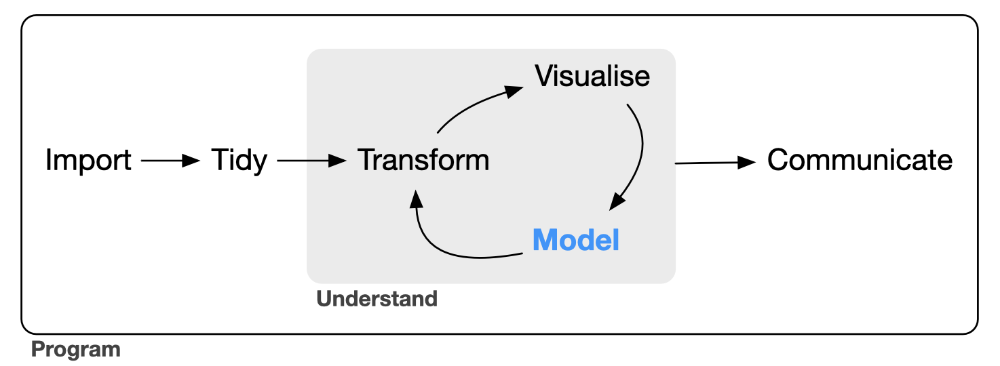
W ramach czynności zaznaczonych na szarym polu możemy wyróżnić:
eksploracyjna analiza danych (EDA) - to kombinacja pewnych obliczeń statystycznych i wizualizacji, w celu odpowiedzi na podstawowe pytania i postawienia kolejnych. Przykładowo jeśli na wykresie histogramu lub gęstości zmiennej wynikowej w zadaniu regresyjnym zauważymy wyraźną dwumodalność, to może ona świadczyć, że badana zbiorowość nie jest homogeniczna w kontekście analizowanej zmiennej, a co w konsekwencji może skłonić nas do oddzielnego modelowania zjawisk w każdej z podpopulacji.
inżynieria cech (ang. feature engineering) - zespół czynności mający na celu transformację i selekcję cech w procesie budowania modelu.
tuning modeli - zespół czynności mający na celu optymalizację hiperparametrów modeli, poprzez wybór różnych ich konfiguracji oraz porównanie efektów uczenia.
ocena dopasowania modeli - ocena jakości otrzymanych modeli na podstawie miar oraz wykresów diagnostycznych.
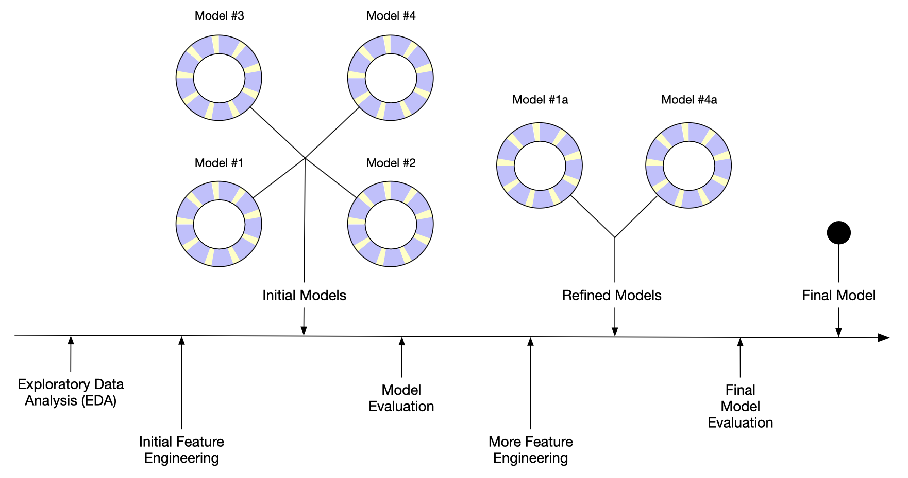
Przykładowo w pracy Kuhn i Johnson (2021) autorzy badając natężenie ruchu kolei publicznej w Chicago, przeprowadzili następujące rozumowanie podczas budowy modelu (oryginalna pisownia):
3. Opisz zasadę działania testów bootstrapowych.
4. Opisz zasadę działania testów permutacyjnych.
5. Podaj podział miar dopasowania modeli predykcyjnych oraz wymień po trzy miary dedykowane do modeli regresyjnych.
Wśród miar dopasowania dla modeli regresyjnych można wyróżnić, te które mierzą zgodność pomiędzy wartościami obserwowanymi a przewidywanymi, wyrażone często pewnego rodzaju korelacjami (lub ich kwadratami), a interpretujemy je w ten sposób, że im wyższe wartości tych współczynników tym bardziej zgodne są predykcje z obserwacjami. Drugą duża grupę miar stanowią błędy (bezwzględne i względne), które mierzą w różny sposób różnice pomiędzy wartościami obserwowanymi i przewidywanymi. Jedne są bardziej odporne wartości odstające inne mniej, a wszystkie interpretujemy tak, że jeśli ich wartość jest mniejsza tym lepiej jest dopasowany model.
Miary dopadowania modeli regresyjnych:
Miary bazujące na korelacjach:
\(R^2\)
Miara stosowana najczęściej do oceny dopasowania modeli liniowych, zdefiniowana jako: \[R^2 = \frac{\sum_i(y_i - \hat y_i)^2}{\sum_i(y_i - \bar y)^2}\] gdzie
\(\hat y_i\) jest \(i\)-tą wartością przewidywaną na podstawie modelu,
\(\bar y\) jest średnią zmiennej wynikowej,
\(y_i\) jest \(i\)-tą wartością obserwowaną.
Wśród wad tak zdefiniowanej miary należy wymienić przede wszystkim fakt, iż dołączając do modelu zmienne, których zdolność predykcyjna jest nieistotna, to i tak rośnie \(R^2\)
W przypadku modeli liniowych wprowadzaliśmy korektę eliminującą tą wadę, jednak w przypadku modeli predykcyjnych skorygowana miara \(R_{\text{adj}}^2\) nie wystarcza. W sytuacji gdy modele mają bardzo słabą moc predykcyjną, czyli są np. drzewem regresyjnym bez żadnej reguły podziału (sam korzeń), wówczas można otrzymać ujemne wartości obu miar. Zaleca się zatem wprowadzenie miary, która pozbawiona jest tej wady, a jednocześnie ma tą sama interpretację.
Definiuję się ją następująco: \[\tilde R^2 = \left[ Cor \left( Y, \hat Y \right) \right]^2\] Tak zdefiniowana miara zapewnia nam wartości w przedziale \((0,1)\), a klasyczna miara nie. Oczywiście interpretacja jest następująca, że jeśli wartość \(\tilde R^2\) jest bliska \(1\), to model jest dobrze dopasowany, a bliskie \(0\) oznacza słabe dopasowanie.\(CCC\)
Korelacyjny współczynnik zgodności (ang. Concordance Correlation Coefficient) mierzy zgodność pomiędzy wartościami predykcji i obserwowanymi. Definiujemy go w następujący sposób: \[CCC = \frac{2\rho\sigma_y\sigma_{\hat{y}}}{\sigma^2_{y}+\sigma^2_{\hat{y}}+(\mu_y-\mu_{\hat{y}})^2}\] gdzie
\(\mu_y,\mu_{\hat{y}}\) oznaczają średnią wartości obserwowanych i przewidywanych,
\(\sigma_{y},\sigma_{\hat{y}}\) stanowią odchylenia standardowe tych wielkości,
\(\rho\) est współczynnikiem korelacji pomiędzy \(Y\) i \(\hat Y\).
Miary bazujące na błędach:
RMSE
Inną powszechnie stosowaną miarą do oceny dopasowania modeli regresyjnych jest pierwiastek błędu średnio-kwadratowego (ang. Root Mean Square Error), zdefiniowany następująco: \[\text{RMSE} = \sqrt{\frac{\sum^n_{i=1}(y_i-\hat y_i)^2}{n}}\] gdzie
\(n\) oznacza liczebność zbioru danych na jakim dokonywana jest ocena dopasowania.
Im mniejsza jest wartość błędu RMSE tym lepiej dopasowany jest model. Niestety wadą tej miary jest brak odporności na wartości odstające. Błąd w tym przypadku jest mierzony w tych samych jednostkach co mierzona wielkość wynikowa \(Y\).MSE
Ściśle powiązaną miarą dopasowania modelu z RMSE jest błąd średnio-kwadratowy (ang. Mean Square Error). Oczywiście jest on definiowany jako kwadrat RMSE. Interpretacja jest podobna jak w przypadku RMSE. W tym przypadku błąd jest mierzony w jednostkach do kwadratu i również jak w przypadku RMSE miara ta jest wrażliwa na wartości odstające.MAE
Chcąc uniknąć (choćby w części) wrażliwości na wartości odstające stosuje się miarę średniego absolutnego błędu (ang. Mean Absolut Error). Definiujemy go następująco: \[\text{MAE} = \frac{\sum^n_{i=1}|y_i-\hat y_i|}{n}\] Ponieważ wartości błędów \(y_i-\hat y_i\) nie są podnoszone do kwadratu, to miara ta jest mniej wrażliwa na punkty odstające. Interpretacja jej jest podobna jak MSE i RMSE.
Błąd w tym przypadku jest również mierzony w tych samych jednostkach co \(Y\).Wymienione miary błędów są nieunormowane (tzn. przyjmują również wartości spoza przedziału \((0,1)\)), a dopasowania modeli możemy dokonywać jedynie porównując wynik błędu z wartościami \(Y\), lub też przez porównanie miar dla różnych modeli.
6. Podaj podział miar dopasowania modeli predykcyjnych oraz wymień po trzy miary dedykowane do modeli klasyfikacyjnych.
W modelach klasyfikacyjnych miary dopasowania można podzielić na te, które dotyczą modeli z binarną zmienną wynikową i ze zmienna wielostanową. Miary można też podzielić na te, które zależą od prawdopodobieństwa poszczególnych stanów i te, które zależą tylko od klasyfikacji wynikowej.
Do wyliczenia miar probabilistycznych konieczne jest wyliczenie predykcji z prawdopodobieństwami poszczególnych stanów.
Aby przybliżyć miary dopasowania oparte o klasyfikację stanów, konieczne jest wprowadzenie pojęcia macierzy klasyfikacji (ang. confusion matrix). Można je stosować zarówno do klasyfikacji dwustanowej, jak i wielostanowej.
Miary wyliczane na podstawie macierzy klasyfikacji:
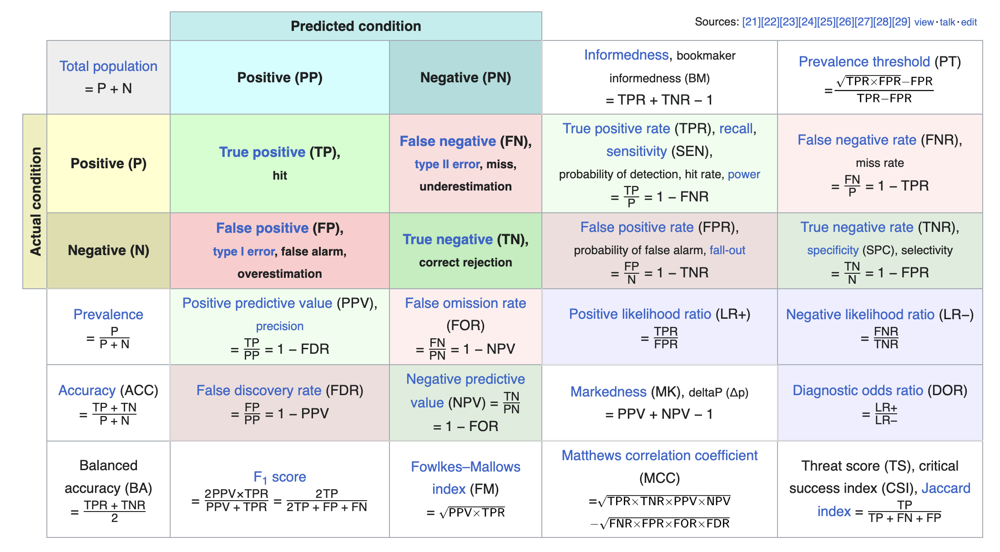
Accuracy - informuje o odsetku poprawnie zaklasyfikowanych obserwacji.
Miara ta ma jednak poważną wadę, w przypadku modeli dla danych z wyraźną dysproporcją jednej z klas (powiedzmy jedna stanowi 95% wszystkich obserwacji), może się zdarzyć sytuacja, że nawet bezsensowny model, czyli taki, który zawsze wskazuje tą właśnie wartość, będzie miał accuracy na poziomie 95%.
Sensitivity - inaczej nazywana Racall lub True Positive Rate (TPR), stanowi stosunek true positive do wszystkich przypadków positive.
Specificity (speci TFi TFi) - nazywane również True Negative Rate (TPR), wyraża się stosunkiem pozycji true negative do wszystkich obserwacji negative.
Balanced Accuracy - liczona jako średnia sensitivity i specificity.
Należy pamiętać, że aby obserwacje zaklasyfikować do jednej z klas należy przyjąć pewien punkt odcięcia prawdopodobieństwa (threshold), od którego przewidywana wartość będzie przyjmowała stan \(,,1''\). Domyślnie w wielu modelach ten punkt jest ustalony na poziomie \(0.5\). Nie jest on jednak optymalny ze względu na jakość klasyfikacji. Zmieniając ten próg otrzymamy różne wartości powyższych miar.
Istnieją kryteria doboru progu odcięcia, np. oparte na wartości Youdena, F1, średniej geometrycznej itp.
Bez względu na przyjęty poziom odcięcia istnieją również miary i wykresy, które pozwalają zilustrować jakość modelu. Należą do nich m.in. ROC i AUC (opisane tutaj Section 1.8)
7. Podaj miary dopasowania modeli ze zmienną zależną wieloklasową.
Miary dedykowane dla modeli binarnych można również wykorzystać do modeli ze zmienną zależną wielostanową. Oczywiście wówczas trzeba użyć pewnego rodzaju uśredniania. Implementacje wieloklasowe wykorzystują mikro, makro i makro-ważone uśrednianie, a niektóre metryki mają swoje własne wyspecjalizowane implementacje wieloklasowe.
- Makro uśrednianie - redukuje wieloklasowe predykcje do wielu zestawów przewidywań binarnych. Oblicza się odpowiednią metrykę dla każdego z przypadków binarnych, a następnie uśrednia wyniki.
Jako przykład, rozważmy precision. W przypadku wieloklasowym, jeśli istnieją poziomy A, B, C i D, makro uśrednianie redukuje problem do wielu porównań jeden do jednego. Kolumny truth i estimate są rekodowane tak, że jedynymi dwoma poziomami są A i inne, a następnie precision jest obliczana w oparciu o te rekodowane kolumny, przy czym A jest “wyróżnioną” kolumną. Proces ten jest powtarzany dla pozostałych 3 poziomów, aby uzyskać łącznie 4 wartości precyzji. Wyniki są następnie uśredniane.
Formuła dla \(k\) klas wynikowych prezentuje się następująco: \[Pr_\text{macro} = \frac{Pr_1 + Pr_2 + \dots + Pr_k}{k}\] gdzie
\(Pr_i\) oznacza precision dla \(i\)-tej klasy. - Makro-ważone uśrednianie - jest co do zasady podobne do metody makro uśredniania, z tą jednak zmianą, że wagi poszczególnych czynników w średniej zależą od liczności tych klas, co sprawia, że miara ta jest bardziej optymalna w przypadku wyraźnych dysproporcji zmiennej wynikowej.
Formalnie obliczamy to wg reguły: \[Pr_\text{weighted-macro} = Pr_1\frac{\#\text{Obs}_1}{n} + Pr_2\frac{\#\text{Obs}_2}{n} + \ldots + Pr_k\frac{\#\text{Obs}_k}{n}\] gdzie
\(\#\text{Obs}_i\) oznacza liczbę obserwacji w \(i\)-tej grupie,
\(n\) jest liczebnością całego zbioru. - Mikro uśrednianie - traktuje cały zestaw danych jako jeden wynik zbiorczy i oblicza jedną metrykę zamiast \(k\) metryk, które są uśredniane.
Dla precision działa to poprzez obliczenie wszystkich true positive wyników dla każdej klasy i użycie tego jako licznika, a następnie obliczenie wszystkich true positive i false positive wyników dla każdej klasy i użycie tego jako mianownika. \[Pr_{\text{mirco}} = \frac{TP_1 + TP_2 + \dots + TP_k}{(TP_1 + TP_2 + \dots + TP_k) + (FP_1 + FP_2 + \dots + FP_k)}\] W tym przypadku, zamiast klas o równej wadze, mamy obserwacje z równą wagą. Dzięki temu klasy z największą liczbą obserwacji mają największy wpływ na wynik.
8. Opisz czym jest krzywa ROC i miara AUC.
ROC (Receiver Operating Characteristic) - krzywa, która przedstawia kompromis pomiędzy sensitivity i specificity dla różnych poziomów odcięcia. Pokazuje ona, ile poprawnych pozytywnych klasyfikacji można uzyskać, gdy dopuszcza się coraz więcej fałszywych pozytywów.
AUC (Area Under ROC Curve) - mierzy pole pod krzywą ROC. Krzywa ROC nie jest pojedynczą liczbą ale całą krzywą. Dostarcza ona szczegółowych informacji o zachowaniu klasyfikatora, ale trudno jest szybko porównać wiele krzywych ROC ze sobą. W szczególności, jeśli ktoś chciałby zastosować jakiś automatyczny mechanizm tuningowania hiperparametrów, maszyna potrzebowałaby wymiernego wyniku zamiast wykresu, który wymaga wizualnej inspekcji. AUC jest jednym ze sposobów podsumowania krzywej ROC w jedną liczbę, tak aby można było ją łatwo i automatycznie porównać.
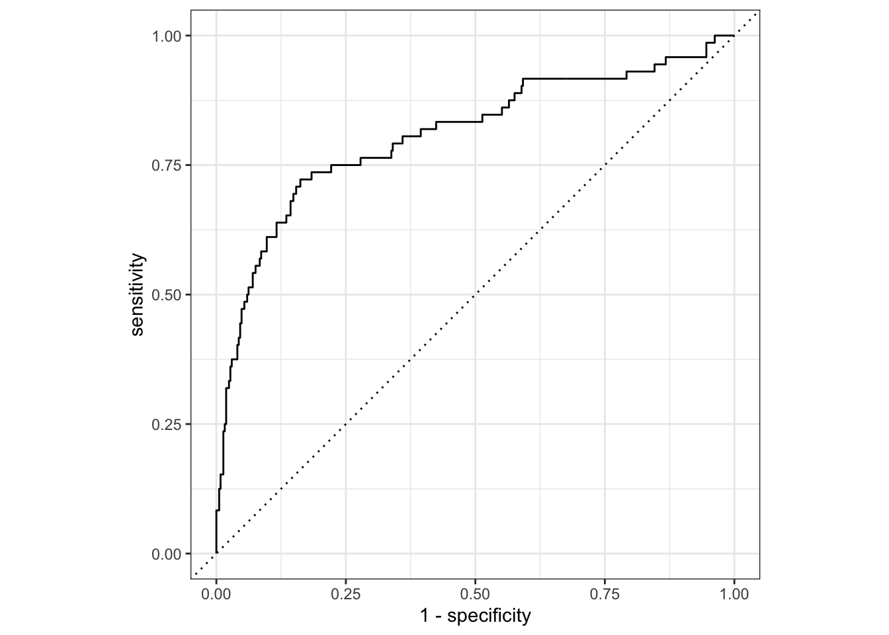
9. Opisz do czego jest stosowany podział na próbę uczącą i testową oraz opisz jak można przeprowadzić podział, na co wpływa proporcja podziału, jak ją można ustalić.
Podstawowym podejściem w empirycznej walidacji modelu jest podział istniejącej puli danych na dwa odrębne zbiory - treningowy i testowy. Zbiór treningowy stanowi zazwyczaj większość danych. Dane te służą dla budowy modelu, poszukiwania optymalnych parametrów modelu, czy selekcji cech istotnych z punktu widzenia predykcji. Pozostała część danych stanowi zbiór testowy. Jest on trzymany aż do momentu, gdy jeden lub dwa modele zostaną wybrane jako metody najlepiej opisujące badane zjawisko. Zestaw testowy jest wtedy używany jako ostateczny arbiter do określenia dopasowania modelu. Krytyczne jest, aby użyć zbiór testowy tylko raz; w przeciwnym razie staje się on częścią procesu modelowania.Proporcje w jakich należy podzielić dane nie są wyraźnie sprecyzowane. Choć istnieją prace, jak np. Joseph (2022), które wskazują konkretne reguły podziału zbioru danych na uczący i testowy dla modeli regresyjnych. W przypadku wspomnianej metody próba testowa powinna stanowić \(\frac{1}{\sqrt p + 1}\) zbioru danych, gdzie \(p\) oznacza liczbę predyktorów modelu.
W podziale zbioru danych na uczący i testowy, ważny jest jeszcze jeden aspekt. W jaki sposób podziału dokonujemy. Najpowszechniej stosowany jest podział losowy (losowanie proste). Metoda ta ma jednak istotną wadę. Próbkowanie losowe działa poprawnie na zbiorach danych zbalansowanych klasowo, czyli takich, w których liczba próbek w każdej kategorii jest mniej więcej taka sama. W przypadku zbiorów danych niezbalansowanych klasowo, taka metoda podziału danych może tworzyć obciążenie modelu.Na przykład, jeśli zbiór danych zawiera 100 obrazów, z których 80 należy do kategorii “pies” i 20 należy do kategorii “kot”, a losowe próbkowanie jest stosowane do podziału danych na zbiory uczący i testowy w stosunku 80%-20% (odpowiednio), może się tak zdarzyć, że zbiór treningowy składa się tylko z obrazów psów, podczas gdy zbiór testowy składa się tylko z obrazów kotów. Nawet jeśli nie zdarzy się tak ekstremalny przypadek, to nierównowaga rozkładów w obu zbiorach może być wyraźna.
Losowanie warstwowe zastosowane do podziału zbioru danych łagodzi problem próbkowania losowego w zbiorach danych z niezrównoważonym rozkładem klas. W tym przypadku, rozkład klas w każdym z zestawów treningowych i testowych jest zachowany.
Załóżmy, że zbiór danych składa się z 100 obrazów, z których 60 to obrazy psów, a 40 to obrazy kotów. W takim przypadku próbkowanie warstwowe zapewnia, że 60% obrazów należy do kategorii “pies”, a 40% do kategorii “kot” w zbiorach uczącym i testowym. Oznacza to, że jeśli pożądany jest podział w proporcji 80%-20%, z 80 obrazów w zbiorze treningowym, 48 obrazów (60%) będzie należało do psów, a pozostałe 32 (40%) do kotów.
Jeszcze jedna uwaga na temat losowego podziału zbioru na uczący i testowy. W jednej sytuacji podział losowy i warstwowy nie są najlepszym rozwiązaniem - chodzi o szeregi czasowe lub dane zawierające znaczący czynnik zmienności w czasie. Wówczas stosuje się podział zbioru za pomocą funkcji initial_time_split, która parametrem prop określa jaka proporcja obserwacji z początku zbioru danych będzie wybrana do zbioru uczącego
Mierzenie wydajności poprzez przewidywanie na podstawie zbioru treningowego prowadziło do wyników, które były zbyt optymistyczne (nierealistycznie). Prowadziło to do modeli, które były nadmiernie dopasowane. Aby ograniczyć ten problem, wybierano ze zbioru uczącego niewielki zbiór walidacyjny i użyto go do pomiaru wydajności podczas trenowania sieci. Gdy poziom błędu na zbiorze walidacyjnym zaczynał rosnąć, trening był wstrzymywany. Innymi słowy, zbiór walidacyjny był środkiem do uzyskania przybliżonego poczucia, jak dobrze model działał przed zbiorem testowym.
10. Na czym polega ekstrakcja cech? Podaj przykłady dwóch technik z tego zakresu.
Ekstracja cech jest jedną z metod reprezentowania wielu cech jednocześnie.
Większość technik z tych technik tworzy nowe cechy z predyktorów, które wychwytują informacje w szerszym zestawie jako całości.
Na przykład, analiza składowych głównych (PCA) próbuje wyodrębnić jak najwięcej oryginalnej informacji w zestawie predyktorów przy użyciu mniejszej liczby cech. PCA jest liniową metodą ekstrakcji, co oznacza, że każda nowa cecha jest liniową kombinacją oryginalnych predyktorów. Jednym z ciekawych aspektów PCA jest to, że każda z nowych cech, zwanych głównymi składowymi, jest nieskorelowana z innymi. Z tego powodu PCA może być bardzo skuteczne w redukcji korelacji pomiędzy predyktorami. PCA zakłada, że wszystkie predyktory są w tej samej skali, przez co stosowanie jej powinno poprzedzać się normalizacją numerycznych predyktorów.
Wśród innych metod ekstrakcji można wymienić analizę składowych niezależnych (ICA), faktoryzację macierzy nieujemnej (NNMF), skalowanie wielowymiarowe (MDS), jednolitą aproksymacja i projekcja (UMAP).
11. Czym jest walidacja krzyżowa i walidacja krzyżowa z powtórzeniami?
Walidacja krzyżowa (ang. cross-validation) jest dobrze ugruntowaną metodą próbkowania. Chociaż istnieje wiele odmian, najbardziej powszechną metodą walidacji krzyżowej jest \(V\)-krotna walidacja krzyżowa. Dane są losowo dzielone na \(V\) zbiorów o mniej więcej równej wielkości (zwanych krotkami lub foldami).
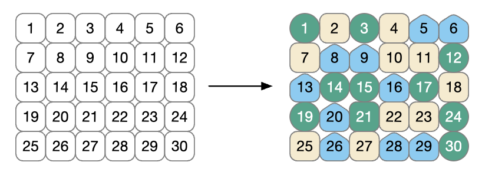
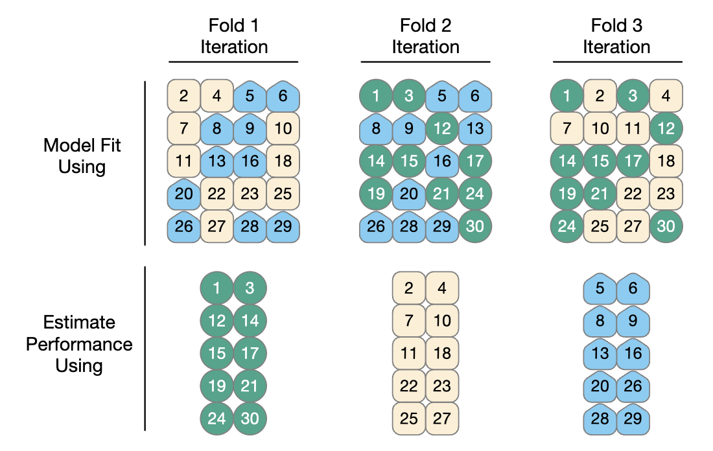
Dla każdej iteracji jeden fold jest zatrzymywany do oceny modelu, a pozostałe foldy są używane do uczenia modelu. Proces ten jest kontynuowany dla każdego folda, tak że trzy modele dają trzy zestawy statystyk dopasowania.
Gdy \(V = 3\) zbiory analiz stanowią 2/3 zbioru treningowego, a każdy zbiór oceny stanowi odrębną 1/3. Końcowa estymacja resamplingu wydajności uśrednia każdą z \(V\) replik.
Użycie \(V=3\) jest dobrym wyborem do zilustrowania walidacji krzyżowej, ale jest to zły wybór w praktyce, ponieważ jest zbyt mało foldów, aby wygenerować wiarygodne szacunki. W praktyce wartości \(V\) to najczęściej 5 lub 10; raczej preferujemy 10-krotną walidację krzyżową jako domyślną, ponieważ jest ona wystarczająco duża, aby uzyskać dobre wyniki w większości sytuacji.
Jakie są skutki zmiany \(V\)? Większe wartości powodują, że szacunki z próbkowania mają mały błąd/obciążenie, ale znaczną wariancję. Mniejsze wartości \(V\) mają duży błąd, ale niską wariancję. Preferujemy 10-krotne, ponieważ szum jest zmniejszony przez replikacje, ale obciążenie już nie.
Najważniejszą odmianą walidacji krzyżowej jest \(V\)-krotna walidacja krzyżowa z powtórzeniami. W zależności od rozmiaru danych i innych cech, ocena modelu uzyskana w wyniku \(V\)-krotnej walidacji krzyżowej może być nadmiernie zaszumiona. Podobnie jak w przypadku wielu problemów statystycznych, jednym ze sposobów zmniejszenia szumu jest zebranie większej ilości danych. W przypadku walidacji krzyżowej oznacza to uśrednienie więcej niż \(V\) statystyk.
Aby stworzyć \(R\) powtórzeń \(V\)-ktornej walidacji krzyżowej, ten sam proces generowania foldów jest wykonywany \(R\) razy, aby wygenerować \(R\) zbiorów złożonych z \(V\) podzbiorów. Zamiast uśredniania \(V\) statystyk, \(V \times R\) wartości daje ostateczną estymację resamplingu.
Generalnie zwiększanie liczby replikacji nie ma dużego wpływu na błąd standardowy estymacji, chyba że bazowa wartość \(\sigma\) jest duża, wówczas faktycznie warto zwiększać liczbę replikacji.
12. Czym jest metoda Leave-One-Out?
Jedną z odmian walidacji krzyżowej jest walidacja krzyżowa typu Leave-One-Out (LOO). Jeśli mamy \(n\) próbek zbioru treningowego, \(n\) modeli jest dopasowywanych przy użyciu \(n-1\) wierszy zbioru treningowego. Każdy model przewiduje pojedynczy wykluczony punkt danych. Na koniec próbkowania \(n\) prognoz jest łączonych w celu uzyskania pojedynczej statystyki dopasowania. Metody LOO są gorsze w porównaniu z prawie każdą inną metodą oceny dopasowania.
Dla wszystkich oprócz patologicznie małych próbek, LOO jest obliczeniowo złożony i może nie mieć dobrych właściwości statystycznych.
13. Czym jest walidacja metodą Monte-Carlo?
Innym wariantem \(V\)-krotnej walidacji krzyżowej jest walidacja krzyżowa Monte-Carlo (ang. Monte-Carlo Cross-Validation - MCCV) Podobnie jak w sprawdzianie krzyżowym, przydziela ona ustaloną część danych do zbiorów oceny. Różnica między MCCV a zwykłą walidacją krzyżową polega na tym, że w przypadku MCCV ta część danych jest za każdym razem wybierana losowo. Przez to powstają zestawy oceny, które nie wykluczają się wzajemnie.
14. Jak stosujemy bootstraping do walidacji modeli?
Bootstrap został pierwotnie wynaleziony jako metoda aproksymacji próbkowego rozkładu statystyki, którego własności teoretyczne są nieznane. Wykorzystanie jej do szacowania dopasowania modelu jest wtórnym zastosowaniem tej metody.
Próbka bootstrapowa zbioru treningowego to próbka, która ma ten sam rozmiar co zbiór treningowy, ale jest losowana ze zwracaniem. Oznacza to, że niektóre obserwacje zbioru treningowego są wielokrotnie wybierane do zbioru analitycznego. Każdy punkt danych ma 63,2% szans na włączenie do zbioru uczącego przynajmniej raz. Zestaw oceny zawiera wszystkie próbki zestawu treningowego, które nie zostały wybrane do zestawu analitycznego (średnio 36,8% zestawu treningowego). Podczas bootstrappingu zestaw oceny jest często nazywany próbką poza workiem (ang. Out-Of-Bag).
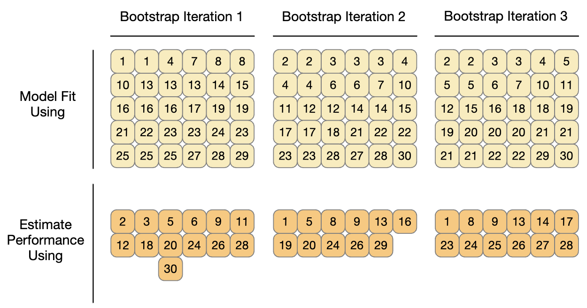 Próbki bootstrapowe (w przeciwieństwie do walidacji krzyżowej) dają oszacowania dopasowania, które mają bardzo niską wariancję , ale są pesymistyczne w ocenie obciążenia. Oznacza to, że jeśli prawdziwa dokładność modelu wynosi 90%, bootstrap będzie miał tendencję do oszacowania wartości mniejszej niż 90%. Wielkość błędu systematycznego nie może być określona empirycznie z wystarczającą dokładnością. Dodatkowo, wielkość błędu systematycznego zmienia się w zależności od skali dopasowania. Na przykład obciążenie będzie prawdopodobnie inne, gdy dokładność wynosi 90% w porównaniu z 70%.
Bootstrap jest również wykorzystywany wewnątrz wielu modeli. Na przykład, wspomniany wcześniej model lasu losowego zawierał 1000 indywidualnych drzew decyzyjnych. Każde drzewo było produktem innej próbki bootstrapowej zbioru treningowego.
15. Czym jest i do czego stosujemy próbkowanie kroczące?
Gdy dane mają istotny składnik czasowy (jak np. szeregi czasowe), metoda próbkowania powinna pozwolić na oszacowanie sezonowych i okresowych trendów w szeregach czasowych. Technika, która losowo próbkuje wartości ze zbioru treningowego, nie pozwoli na oszacowanie tych wzorców.
Kroczące próbkowanie źródła (ang. rolling forecast origin resampling) jest metodą, która emuluje sposób, w jaki dane szeregów czasowych są często partycjonowane w praktyce, estymując parametry modelu na danych historycznych i oceniając go z najnowszymi danymi. Dla tego typu resamplingu określa się rozmiar zbiorów analiz i ocen. Pierwsza iteracja resamplingu wykorzystuje te rozmiary, zaczynając od początku serii. Druga iteracja wykorzystuje te same rozmiary danych, ale przesuwa się o ustaloną liczbę próbek.
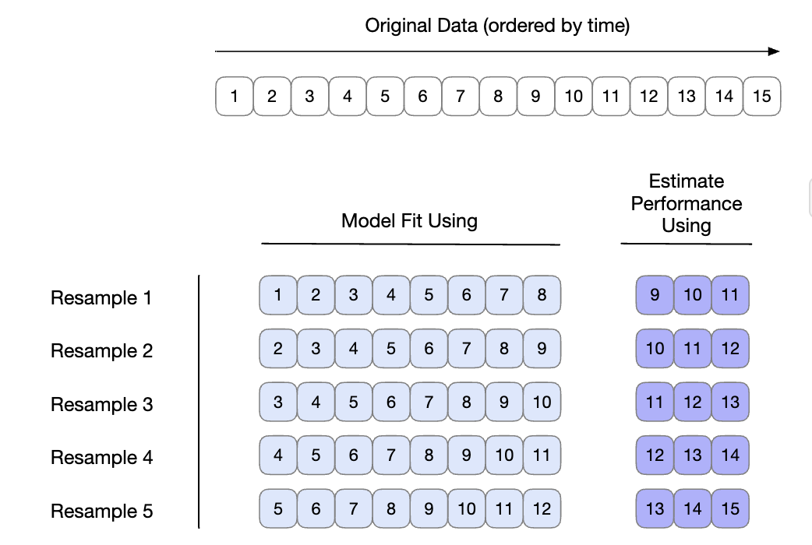
Istnieją dwie różne konfiguracje tej metody:
Zestaw analiz może narastać (w przeciwieństwie do utrzymywania tego samego rozmiaru). Po pierwszym początkowym zestawie analitycznym nowe próbki mogą narastać bez odrzucania wcześniejszych danych. W rezultacie oznacza to, że po nauczeniu i ocenie dopasowania modelu na Resample 1, model jest uczony na zbiorze rozszerzonym o obserwację 9, czyli na danych od 1 do 9. Następnie oceniany na obserwacjach od 10 do 12, itd.
Próbki nie muszą być zwiększane o jeden. Na przykład, w przypadku dużych zestawów danych, blok przyrostowy może wynosić tydzień lub miesiąc zamiast dnia.
16. Na czym polega optymalizacja modeli predykcyjnych?
Proces w którym odbywa się poszukiwanie optymalnych parametrów modelu nazywamy optymalizacją modelu (ang. tuning). Definicję tę można nawet rozszerzyć, jeśli pomyślimy o dostosowaniu takich parametrów jak szybkość uczenia sieci neuronowej, rodzaj metody gradientowej, czy liczba iteracji/epok w procesie uczenia. Co więcej również w procesie przygotowania danych do modelowania, występują parametry, których wartość należy optymalizować. Przykładowo liczba składowych głównych w PCA jest hiperparametrem, którego wartość należy dostrajać. Nawet w kontekście wspomnianych klasycznych modeli jak np. regresja możemy optymalizować model pod kątem wyboru funkcji łączącej. Jak zatem przeprowadzić optymalizację modelu, skoro tak wiele różnych parametrów może wpłynąć na ostateczną jego postać? To zależy od tego co chcemy optymalizować. Przykładowo jeśli obiektem naszych zainteresowań jest wybór najlepszej funkcji łączącej, to powinniśmy użyć do tego funkcji celu jako miary oceniającej rozwiązania. Friedman pokazał, że optymalna liczba drzew będzie inna jeśli w procesie optymalizacji użyjemy dwóch różnych kryteriów oceny modelu - funkcji wiarygodności i dokładności (accuracy).
17. Przedstaw zasadę działania dwóch sposobów podejścia do tuningu modeli.
Istnieją dwa sposoby realizacji tuningu modeli:
Przeszukiwanie siatki - gdy wstępnie określamy zestaw wartości parametrów do oceny. Głównymi problemami związanymi z przeszukiwaniem siatki są sposób wykonania siatki i liczba kombinacji parametrów do oceny. Przeszukiwanie siatki jest często oceniane jako nieefektywne, ponieważ liczba punktów siatki wymaganych do pokrycia przestrzeni parametrów może stać się niemożliwa do opanowania. Z jednej strony jest w tym trochę prawdy, ale jest to najbardziej uzasadniona metoda, gdy proces nie jest zoptymalizowany.
przeszukiwanie iteracyjne lub sekwencyjne - gdy sekwencyjnie odkrywamy nowe kombinacje parametrów na podstawie poprzednich wyników. W niektórych przypadkach do rozpoczęcia procesu optymalizacji wymagany jest wstępny zestaw wyników dla jednej lub więcej kombinacji parametrów.
Można też stosować rozwiązania hybrydowe, gdzie metoda siatki jest stosowana do wstępnego oszacowania parametrów modelu, a następnie metodami iteracyjnymi korygowane są wspomniane parametry.
W procesie dostrajania modelu, możemy szacować hiperparametry główne oraz specyficzne dla danego silnika metody.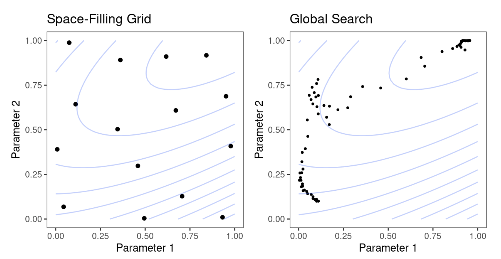
18. Opisz przeszukiwanie z wykorzystaniem siatki regularnej i nieregularnej.
W metodach przeszukiwania siatki (ang. grid search) możliwe wartości parametrów określa się a priori.
Istnieją dwa główne rodzaje siatek:
Siatki regularne łączą każdy parametr (z odpowiadającym mu zbiorem możliwych wartości) czynnikowo, tj. poprzez wykorzystanie wszystkich kombinacji zbiorów.
Regularne siatki są kombinacjami oddzielnych zestawów wartości parametrów, gdzi użytkownik najpierw tworzy odrębny zestaw wartości dla każdego parametru. Liczba możliwych wartości nie musi być taka sama dla każdego parametru.Siatka nieregularne to taka, w której kombinacje parametrów nie są tworzone regularnie.
Istnieje kilka możliwości tworzenia nieregularnych siatek. Pierwszą z nich jest użycie losowego próbkowania w całym zakresie parametrów. Jeśli parametr ma powiązane przekształcenie, liczby losowe są generowane w przekształconej skali.Problem z siatkami losowymi polega na tym, że przy małych i średnich siatkach wartości losowe mogą powodować nakładanie się kombinacji parametrów. Ponadto siatka losowa musi pokryć całą przestrzeń parametrów, a prawdopodobieństwo dobrego pokrycia rośnie wraz z liczbą wartości siatki.
19. Opisz zasadę wykorzystania wielu rdzeni procesora w optymalizacji modelu.
Chcąc przyspieszyć procedurę tuningu, musimy stosować paralelizację procedury dostrajania. W pakiecie tune możliwe jest zastosowanie paralelizacji na dwa sposoby. Podczas dostrajania modeli poprzez wyszukiwanie w siatce, istnieją dwie odrębne pętle: jedna nad foldami (zewnętrzna pętla) i druga nad unikalnymi kombinacjami parametrów (wewnętrzna pętla).
Domyślnie pakiet tune paralelizuje tylko nad próbkami (pętla zewnętrzna). Jest to optymalny scenariusz, gdy metody wstępnego przetwarzania (preprocessing) są kosztowne oblczeniowo. Istnieją jednak dwa potencjalne minusy tego podejścia:
Ogranicza osiągalne przyspieszenia, gdy preprocessing nie jest wymagający obliczeniowo.
Liczba równoległych rdzeni jest ograniczona przez liczbę foldów. Na przykład przy 10-krotnej walidacji krzyżowej można użyć tylko 10 równoległych rdzeni, nawet jeśli komputer ma więcej.
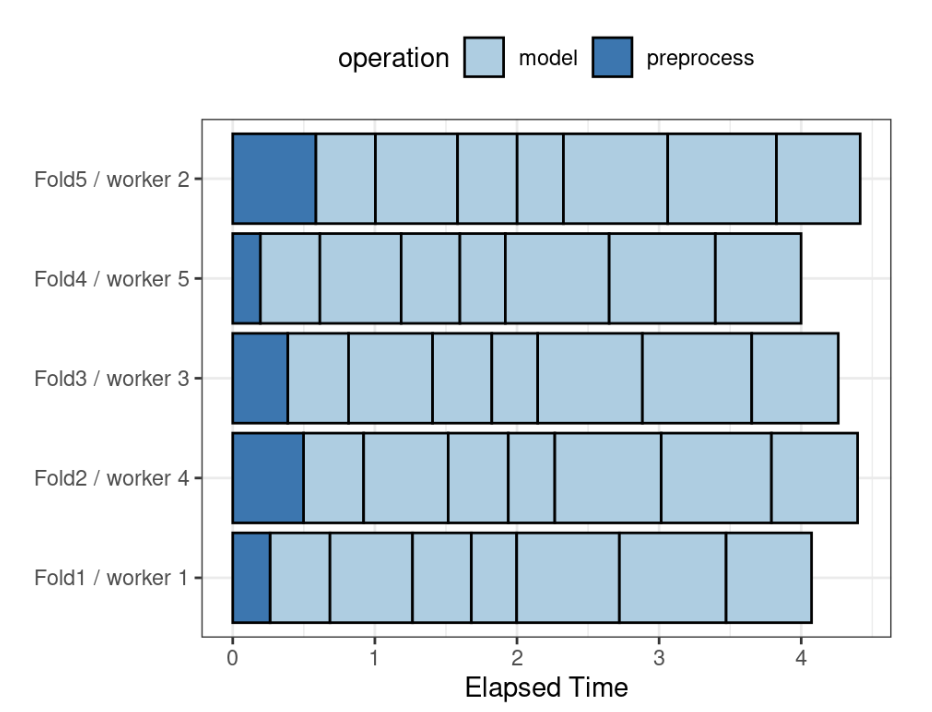
Każdy fold jest przypisany do własnego procesu roboczego, a ponieważ dostrajane są tylko parametry modelu, przetwarzanie wstępne jest przeprowadzane raz na fold/rdzeń. Jeśli użyto by mniej niż pięciu rdzeni, niektóre rdzenie otrzymaliby do przeliczenia kilka foldów.
Zamiast równoległego przetwarzania tylko nad zewnętrzną pętlą, alternatywny schemat łączy pętle nad foldami i modelami w jedną pętlę. W tym przypadku paralelizacja występuje teraz nad pojedynczą pętlą. Na przykład, jeśli używamy 5-krotnej walidacji krzyżowej z \(M\) wartościami parametrów dostrajania, pętla jest wykonywana przez \(5 \times M\) iteracji. Zwiększa to liczbę potencjalnych rdzeni, które można wykorzystać. Jednak praca związana ze wstępnym przetwarzaniem danych jest powtarzana wielokrotnie. Jeśli te kroki są wymagające obliczeniowo, to podejście to będzie nieefektywne.
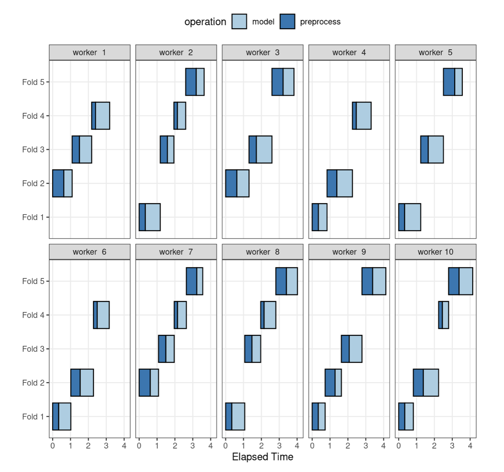
Tutaj każdy proces roboczy obsługuje wiele foldów, a przetwarzanie wstępne jest niepotrzebnie powtarzane. Na przykład, dla pierwszego foldu, preprocessing został wykonany siedem razy zamiast raz. Dla tego schematu argumentem funkcji sterującej jest parallel_over = "everything".
20. Czym jest metoda wyścigów?
21. Czym jest przeszukiwanie iteracyjne?
Wyszukiwanie oparte o siatkę przyjmuje wstępnie zdefiniowany zestaw wartości kandydujących, ocenia je, a następnie wybiera najlepsze ustawienia. Iteracyjne metody wyszukiwania realizują inną strategię. Podczas procesu wyszukiwania przewidują one, które wartości należy przetestować w następnej kolejności. Przykładami takiego przeszukiwania są:
Optymalizacja bayesowska (Section 1.22)
Symulowane wyżarzanie (Section 1.25)
22. Opisz optymalizację bayesowską.
Techniki optymalizacji bayesowskiej analizują bieżące wyniki próbkowania i tworzą model predykcyjny, aby zasugerować wartości parametrów dostrajania, które nie zostały jeszcze ocenione. Sugerowana kombinacja parametrów jest następnie ponownie próbkowana. Wyniki te są następnie wykorzystywane w innym modelu predykcyjnym, który rekomenduje więcej wartości kandydatów do testowania, i tak dalej. Proces ten przebiega przez ustaloną liczbę iteracji lub do momentu, gdy nie pojawią się dalsze poprawy.
Podczas korzystania z optymalizacji bayesowskiej, podstawowe problemy to sposób tworzenia modelu i wybór parametrów rekomendowanych przez ten model. Najpierw rozważmy technikę najczęściej stosowaną w optymalizacji bayesowskiej, czyli model procesu gaussowskiego.
23. Czym są procesy gaussowskie?
Modele procesu gaussowskiego (GP), to techniki statystyczne, które mają swoją historię w statystyce przestrzennej.Mogą być wyprowadzone na wiele sposobów, w tym jako model Bayesowski.
Matematycznie, GP jest zbiorem zmiennych losowych, których wspólny rozkład prawdopodobieństwa jest wielowymiarowy normalny.
Modele procesów gaussowskich są określone przez ich funkcje średniej i kowariancji, choć to ta ostatnia ma większy wpływ na charakter modelu GP. Funkcja kowariancji jest często parametryzowana w kategoriach wartości wejściowych (oznaczanych jako \(x\)).
Przykładowo, powszechnie stosowaną funkcją kowariancji jest funkcja wykładnicza kwadratowa: \[\operatorname{cov}(\boldsymbol{x}_i, \boldsymbol{x}_j) = \exp\left(-\frac{1}{2}|\boldsymbol{x}_i - \boldsymbol{x}_j|^2\right) + \sigma^2_{ij}\] gdzie
\(\sigma_{i,j}^2\) jest wariancją błędu modelu równą zero jeśli \(i=j\).
Możemy to interpretować jako, że wraz ze wzrostem odległości pomiędzy dwoma kombinacjami parametrów, kowariancja pomiędzy metrykami wydajności rośnie wykładniczo. Z równania wynika również, że zmienność metryki wynikowej (Estimated \(R^2\)) jest minimalizowana w punktach, które już zostały zaobserwowane (tzn. gdy \(|x_i - x_j|^2\) wynosi 0). Charakter tej funkcji kowariancji pozwala procesowi gaussowskiemu reprezentować wysoce nieliniowe zależności między wydajnością modelu a dostrajaniem parametrów, nawet jeśli istnieje tylko niewielka ilość danych.
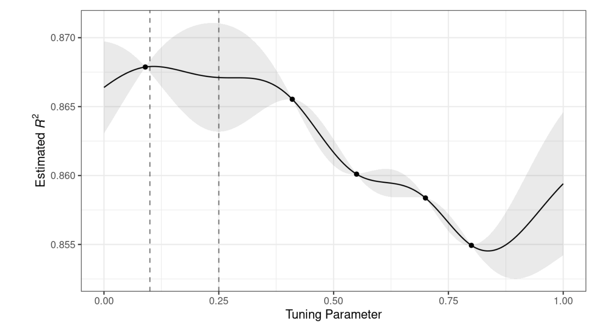
Ważną zaletą tego modelu jest to, że ponieważ określony jest pełny model prawdopodobieństwa, przewidywania dla nowych wejść mogą odzwierciedlać cały rozkład wyniku. Innymi słowy, nowe statystyki wydajności mogą być przewidywane zarówno pod względem średniej jak i wariancji.
24. Co to jest funkcja akwizycji?
Klasa funkcji celu, zwanych funkcjami akwizycji, ułatwia kompromis pomiędzy średnią a wariancją. Przypomnijmy, że przewidywana wariancja modeli GP zależy głównie od tego, jak bardzo są one oddalone od istniejących danych. Kompromis pomiędzy przewidywaną średnią i wariancją dla nowych kandydatów jest często postrzegany przez pryzmat eksploracji i eksploatacji:
Eksploracja - powoduje wybór tych regionów, w których jest mniej obserwowanych modeli kandydujących. W ten sposób nadaje się większą wagę kandydatom o wyższej wariancji i koncentruje się na poszukiwaniu nowych wyników.
Eksploatacja - zasadniczo opiera się istniejących wynikach, w celu odnalezienia najlepszej wartości średniej.
Funkcja akwizycji oczekiwanej poprawy wskazuje którego kandydata wybrać (?). Znowu rysuje wykres z wykładu. Mówi o eksploatacji i eksploracji. Funkcja akwizycji wyznaczy kompromis pomiędzy nimi.
Jedną z najczęściej stosowanych funkcji akwizycji jest oczekiwana poprawa. Na przykład, rozważmy dwie wartości parametrów kandydujących 0,10 i 0,25 (wskazane przez pionowe linie na powyższym rysunku. Używając dopasowanego modelu GP, ich przewidywane \(R^2\) są pokazane na poniższym rysunku wraz z linią odniesienia dla aktualnych najlepszych wyników.
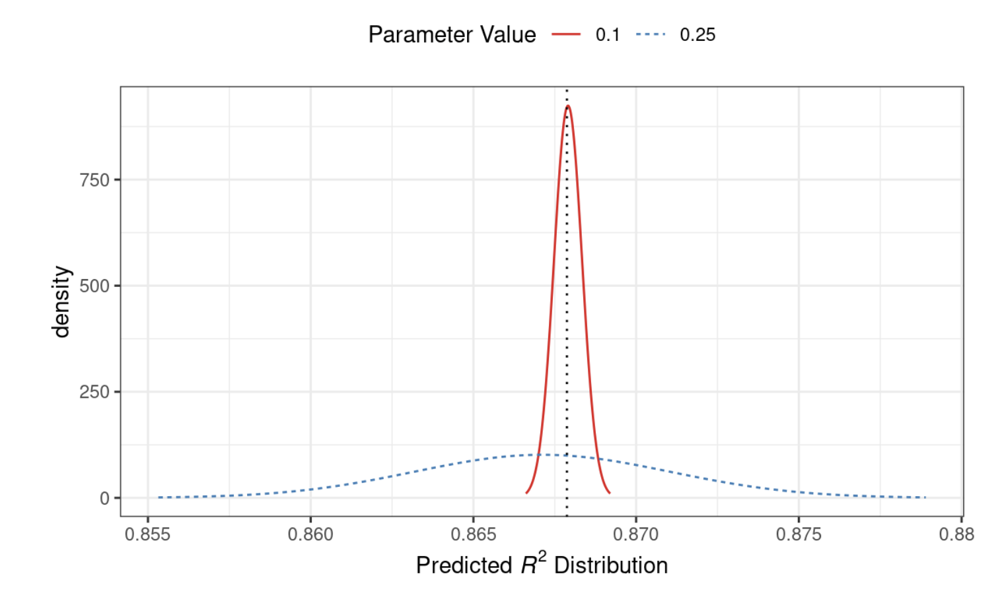
Rozpatrując tylko średnią \(R^2\) lepszym wyborem jest wartość parametru 0,10 Rekomendacja parametru dostrajania dla 0,25 ma gorsze przewidywanie średnie niż aktualny najlepszy kandydat. Jednakże, ponieważ ma wyższą wariancję, ma większy ogólny obszar prawdopodobieństwa powyżej aktualnego najlepszego. W rezultacie ma większą oczekiwaną poprawę:
| Parameter.Value | Mean | Std.Dev | Expected.Improvment |
|---|---|---|---|
| 0.10 | 0.8679 | 0.0004317 | 0.000190 |
| 0.25 | 0.8671 | 0.0039301 | 0.001216 |
Poprawa na całym zakresie
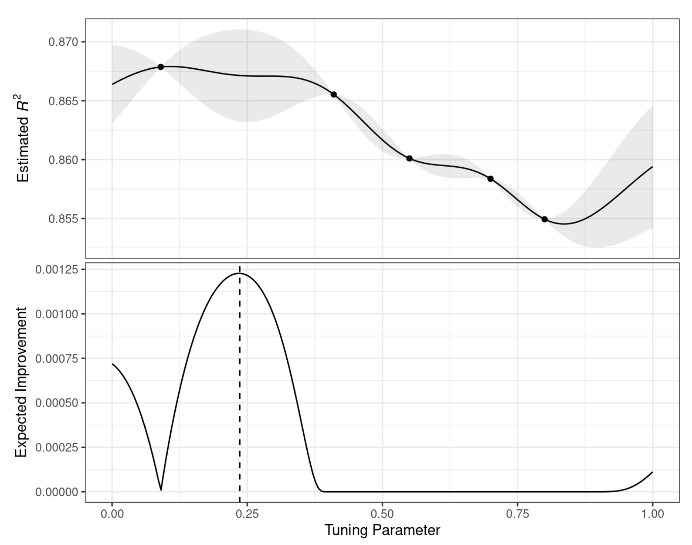
Kiedy oczekiwana poprawa jest obliczana w całym zakresie dostrajania parametrów, zalecany punkt do próbkowania jest znacznie bliższy 0,25 niż 0,10.
25. Opisz zasadę działania metody symulowanego wyżarzania.
Symulowane wyżarzanie (ang. simulated annealing) jest nieliniową procedurą wyszukiwania zainspirowaną procesem stygnięcia metalu. Jest to metoda globalnego wyszukiwania, która może efektywnie poruszać się po wielu różnych obszarach poszukiwań, w tym po funkcjach nieciągłych. W przeciwieństwie do większości procedur optymalizacji opartych na gradiencie, symulowane wyżarzanie może ponownie ocenić poprzednie rozwiązania.
Proces użycia symulowanego wyżarzania rozpoczyna się od wartości początkowej i rozpoczyna kontrolowany losowy spacer przez przestrzeń parametrów. Każda nowa wartość parametrukandydata jest niewielką perturbacją poprzedniej wartości, która utrzymuje nowy punkt w lokalnym sąsiedztwie.
Punkt kandydujący jest oceniany przy zastosowaniu resamplingu, aby uzyskać odpowiadającą mu wartość wydajności. Jeśli osiąga ona lepsze wyniki niż poprzednie parametry, jest akceptowana jako nowa najlepsza i proces jest kontynuowany. Jeśli wyniki są gorsze niż poprzednia wartość, procedura wyszukiwania może nadal używać tego parametru do określenia dalszych kroków. Zależy to od dwóch czynników. Po pierwsze, prawdopodobieństwo zatrzymania złego kandydata maleje wraz z pogorszeniem się wyników. Innymi słowy, tylko nieco gorszy wynik od obecnie najlepszego ma większą szansę na akceptację niż ten z dużym spadkiem wydajności. Drugim czynnikiem jest liczba iteracji wyszukiwania. Symulowane wyżarzanie próbuje zaakceptować mniej suboptymalnych wartości w miarę postępu wyszukiwania.
Dla złego wyniku określamy prawdopodobieństwo akceptacji i porównujemy je z liczbą wylosowaną z rozkładu jednostajnego. Jeśli liczba ta jest większa od wartości prawdopodobieństwa, wyszukiwanie odrzuca bieżące parametry i następna iteracja tworzy swoją wartość kandydata w sąsiedztwie poprzedniej wartości. W przeciwnym razie następna iteracja tworzy kolejny zestaw parametrów na podstawie bieżących (suboptymalnych) wartości.
Wzór na prawdopodobieństwo akceptacji złego wyniku
Prawdopodobieństwo akceptacji złego wyniku można sformalizować jako:
\[\operatorname{Pr}[\text{accept suboptimal parameters at iteration } i] = \exp(c\times D_i \times i)\]
gdzie\(i\) jest numerem iteracji,
\(c\) jest stałą określoną przez użytkownika,
\(D_i\) jest procentową różnicą pomiędzy starą i nową wartością (gdzie wartości ujemne oznaczają gorsze wyniki).
Proces ten trwa przez określoną ilość iteracji, ale może zostać zatrzymany, jeśli w ciągu określonej liczby iteracji nie pojawią się globalnie najlepsze wyniki. Bardzo pomocne może być ustawienie progu restartu. Jeśli wystąpi ciąg niepowodzeń, funkcja ta powraca do ostatnich globalnie najlepszych ustawień parametrów i zaczyna od nowa.
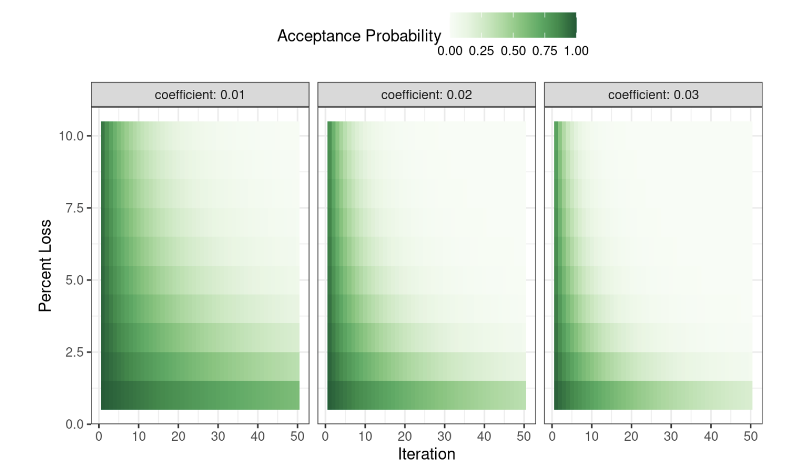
26. Przedstaw powody stosowania redukcji wymiarowości.
Redukcja wymiarowości (ang. dimensionality reduction) jest przekształceniem zbioru danych z przestrzeni wielowymiarowej w przestrzeń niskowymiarową i może być dobrym wyborem, gdy podejrzewamy, że jest “za dużo” zmiennych. Nadmiar zmiennych, zwykle predyktorów, może być problemem, ponieważ trudno jest zrozumieć lub wizualizować dane w wyższych wymiarach.
Podejrzewamy, że jest “za dużo” zmiennych. Nadmiar zmiennych, zwykle predyktorów, może być problemem, ponieważ trudno jest zrozumieć lub wizualizować dane w wyższych wymiarach.
Eksploracja danych jest trudna, gdy istnieją setki tysięcy wymiarów, a redukcja wymiarowości może być pomocą w analizie danych
Model ma nadmiarową liczbę predyktorów. Np w regresji liniowej liczba predyktorów powinna być mniejsza niż liczba obserwacji użytych do dopasowania modelu.
Współliniowość, gdzie korelacje między predyktorami mogą negatywnie wpływać na operacje matematyczne używane do oszacowania modelu. Jeśli istnieje bardzo duża liczba predyktorów, jest mało prawdopodobne, że istnieje taka sama liczba rzeczywistych efektów leżących u podstaw. Predyktory mogą mierzyć ten sam ukryty efekt (efekty), a zatem takie predyktory będą wysoko skorelowane.
27. Jakie są powody stosowania podpróbkowania i nadpróbkowania w modelowaniu predykcyjnym?
Próbkowanie (ang. subsampling) zbioru treningowego, zarówno zaniżanie (ang. undersampling), jak i zawyżanie (ang. oversampling) próbkowania odpowiedniej klasy lub klas, może być pomocne w radzeniu sobie z danymi klasyfikacyjnymi, w których jedna lub więcej klas występuje bardzo rzadko. W takiej sytuacji (bez kompensacji), większość modeli będzie nadmiernie dopasowana do klasy większościowej i wytworzy bardzo dobre statystyki dopasowania dla klasy zawierającej często występujące klasy, podczas gdy klasy mniejszościowe będą miały słabe wyniki.
28. Jakie są korzyści ze stosowania próbkowania zaniżającego liczebność klasy większościowej?
Wyrzucenie dużego procentu danych może być skuteczne w tworzeniu użytecznego modelu, który potrafi rozpoznać zarówno klasy większościowe, jak i mniejszościowe.
Podpróbkowanie prawie zawsze daje modele, które są lepiej skalibrowane, co oznacza, że rozkłady prawdopodobieństwa klas są lepiej zachowane. W rezultacie, domyślne odcięcie 50% daje znacznie większe prawdopodobieństwo uzyskania lepszych wartości czułości i specyficzności niż w innym przypadku.
29. Jakie są zalety próbkowania zawyżającego liczebność klasy mniejszościowej?
Techniki oversamplingu sprowadzają klasy mniejszościowe do liczebności takiej samej jak klasa większościowa (lub jej części) poprzez odpowiednie próbkowanie istniejących obserwacji lub też (jak to jest w przypadku metody SMOTE) tworzy się syntetyczne obserwacje podobne do już istniejących w klasie mniejszościowej. Jako zaletę można potraktować to, że w przeciwieństwie do undersamplingu nie zmniejszamy rozmiaru zbioru danych oraz przez co nie tracimy informacji, inne zalety pokrywają się z próbkowaniem w dół.